Варіанти 4 і 8. Виконав Чумак Кирил, група ІПЗ-11(3). Викладач Ковалюк Тетяна Володимирівна.
Мета роботи
- Вивчити особливості розгалужених обчислювальних процесів.
- Опанувати технологію використання логічних операторів.
Умови задач
Завдання 1, варіант 4
Таблиця 2.1 методички має 24 варіанти, тому для номера 28 у списку групи маємо 28 - 24 = 4.
Визначити значення функції в залежності від значення її аргументу, яке вводиться з клавіатури:
Завдання 2, варіант 8
Таблиця 2.2 має 20 варіантів, тому для номера 28 у списку групи маємо 28 - 20 = 8.
Ввести з клавіатури три дійсних числа. Визначити кількість різних серед них чисел; однакових серед них чисел.
Аналіз задач
Завдання 1, варіант 4
Програма вводить дійсне число x і перевіряє умови в тому самому порядку, що й у формулі. Для цього
використано ланцюжок if ... else if, а подвійні нерівності записано через операцію
&&.
Значення x = 5 не входить у жодну гілку, тому в цій точці функція не визначена. Програма
запам'ятовує це в логічній змінній isDefined і замість значення виводить
повідомлення.
Якщо замість числа введено щось інше, програма виводить повідомлення і просить ввести x ще раз.
Увесь код записано у функції main.
Завдання 2, варіант 8
Умова не каже, як рахувати однакові числа. Я рахую, скільки чисел мають собі пару, і тоді можливі три випадки:
Таблиця 1 - Кількість різних і однакових чисел
| Випадок | Умова | Різних | Однакових |
|---|---|---|---|
| усі рівні | a = b і b = c | 1 | 3 |
| два рівні | a = b, або a = c, або b = c | 2 | 2 |
| усі різні | інакше | 3 | 0 |
Числа беруться прямо з клавіатури і нічого не обчислюється, тому вони порівнюються операцією
==. Введення перевіряється так само, як у першому завданні, а весь код теж у
main.
Джерела: Ковалюк Т.В. Алгоритмізація та програмування, 2024; Ковалюк Т.В., Петрівський В.Я. Гарний стиль програмування мовами C, C++, C#, 2025.
Блок-схеми алгоритмів
Завдання 1, варіант 4
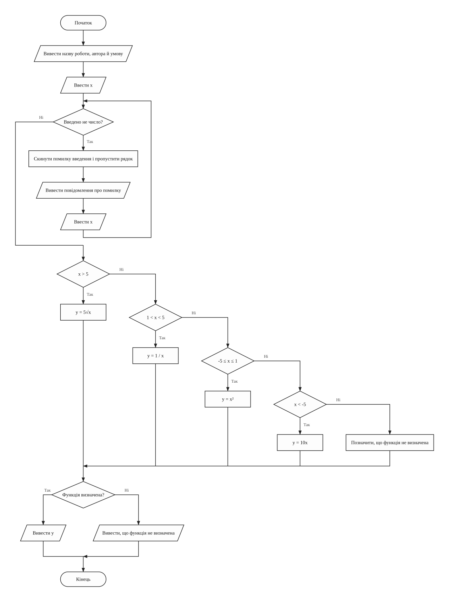
main (обчислення кусково заданої функції)Завдання 2, варіант 8
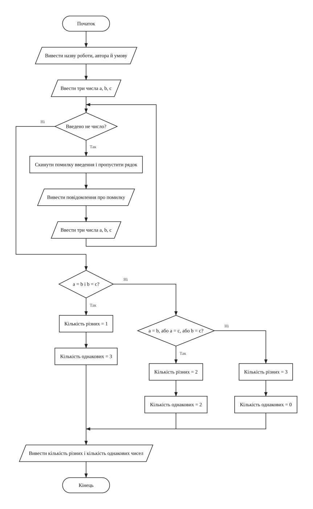
main (кількість різних і однакових чисел)Тексти програм
Завдання 1, варіант 4
Файл task1.cpp
/// <summary>
/// Лабораторна робота №2, завдання 1, варіант 4. Обчислити значення кусково
/// заданої функції для аргументу, введеного з клавіатури.
/// </summary>
/// <remarks>
/// Ім'я файлу: task1.cpp
/// Автор: Чумак Кирил, гр. ІПЗ-11(3)
/// Номер версії модуля: version 1
/// </remarks>
#include <cmath>
#include <iostream>
using namespace std;
// Глобальні змінні
float x = 0; // аргумент функції
float y = 0; // значення функції
bool isDefined = true; // ознака того, що функція визначена в точці x
/// <summary>
/// Вводить аргумент, вибирає гілку функції і виводить результат
/// </summary>
/// <returns>0</returns>
/// <summary>
/// Головна функція програми
/// </summary>
/// <returns>0 після завершення роботи</returns>
int main()
{
cout << "Lab work 2. Task 1. Variant 4." << endl;
cout << "Author: Kyryl Chumak, group IPZ-11(3)" << endl << endl;
cout << "Calculate the function f(x) for x entered from the" << endl;
cout << "keyboard:" << endl;
cout << "f(x) = 5 * sqrt(x), x > 5" << endl;
cout << "f(x) = 1 / x, 1 < x < 5" << endl;
cout << "f(x) = x^2, -5 <= x <= 1" << endl;
cout << "f(x) = 10 * x, x < -5" << endl << endl;
cout << "Enter x: ";
cin >> x;
while (cin.fail())
{
cin.clear(); // скинути помилку введення
cin.ignore(1000, '\n'); // і пропустити неправильний рядок
cout << "Error! Enter x as a number: ";
cin >> x;
}
if (x > 5)
{
y = 5 * sqrt(x);
}
else if (x > 1 && x < 5)
{
y = 1 / x;
}
else if (x >= -5 && x <= 1)
{
y = x * x;
}
else if (x < -5)
{
y = 10 * x;
}
else
{
isDefined = false;
}
if (isDefined)
{
cout << "f(x) = " << y << endl;
}
else
{
cout << "The function is not defined for x = " << x << endl;
}
return 0;
}
Завдання 2, варіант 8
Файл task2.cpp
/// <summary>
/// Лабораторна робота №2, завдання 2, варіант 8. Визначити кількість різних і
/// кількість однакових чисел серед трьох введених.
/// </summary>
/// <remarks>
/// Ім'я файлу: task2.cpp
/// Автор: Чумак Кирил, гр. ІПЗ-11(3)
/// Номер версії модуля: version 1
/// </remarks>
#include <iostream>
using namespace std;
// Глобальні змінні
float a = 0; // перше число
float b = 0; // друге число
float c = 0; // третє число
int differentCount = 0; // кількість різних чисел
int equalCount = 0; // кількість однакових чисел
/// <summary>
/// Вводить три числа, порівнює їх і виводить обидві кількості
/// </summary>
/// <returns>0</returns>
/// <summary>
/// Головна функція програми
/// </summary>
/// <returns>0 після завершення роботи</returns>
int main()
{
cout << "Lab work 2. Task 2. Variant 8." << endl;
cout << "Author: Kyryl Chumak, group IPZ-11(3)" << endl << endl;
cout << "Enter three real numbers. Find how many different numbers" << endl;
cout << "there are among them and how many equal ones." << endl << endl;
cout << "Enter three real numbers: ";
cin >> a >> b >> c;
while (cin.fail())
{
cin.clear(); // скинути помилку введення
cin.ignore(1000, '\n'); // і пропустити неправильний рядок
cout << "Error! Enter three real numbers: ";
cin >> a >> b >> c;
}
if (a == b && b == c)
{
differentCount = 1;
equalCount = 3;
}
else if (a == b || a == c || b == c)
{
differentCount = 2;
equalCount = 2;
}
else
{
differentCount = 3;
equalCount = 0;
}
cout << "Different numbers: " << differentCount << endl;
cout << "Equal numbers: " << equalCount << endl;
return 0;
}
Результати виконання
Завдання 1, варіант 4
Програма рахує одне значення за запуск, тому для кожної гілки і межі є окремий рисунок.
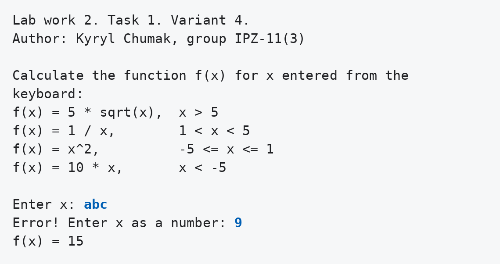
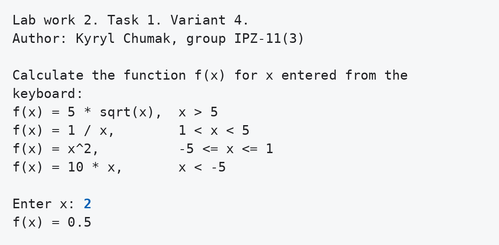
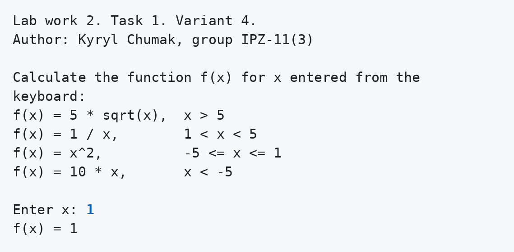
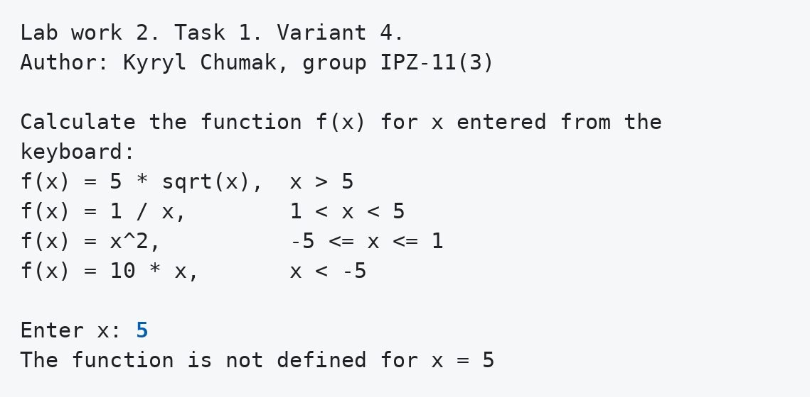
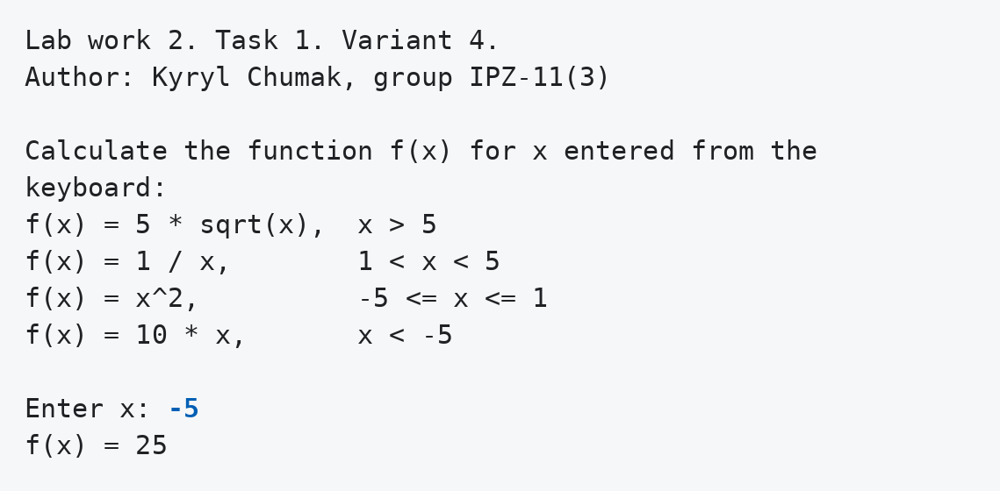
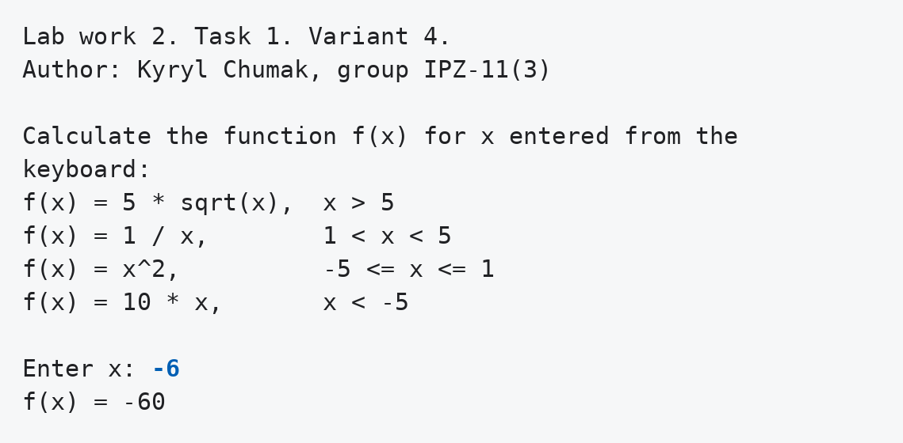
Завдання 2, варіант 8
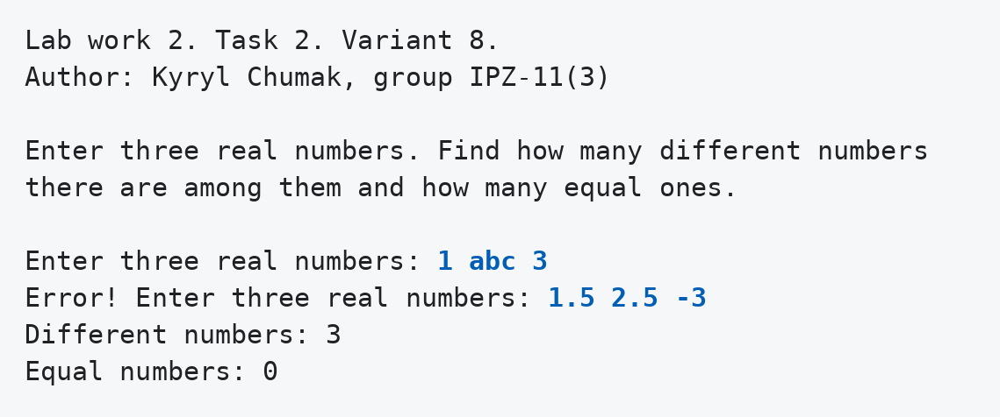
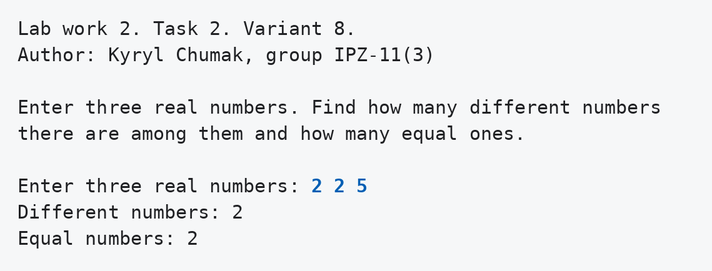
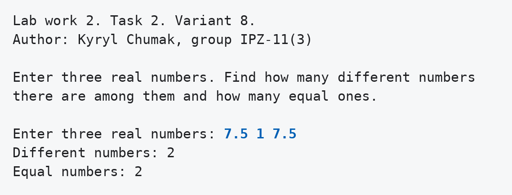
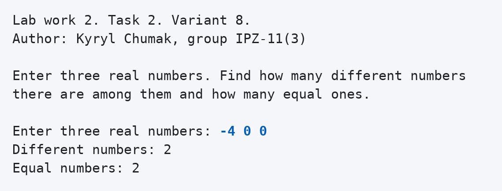
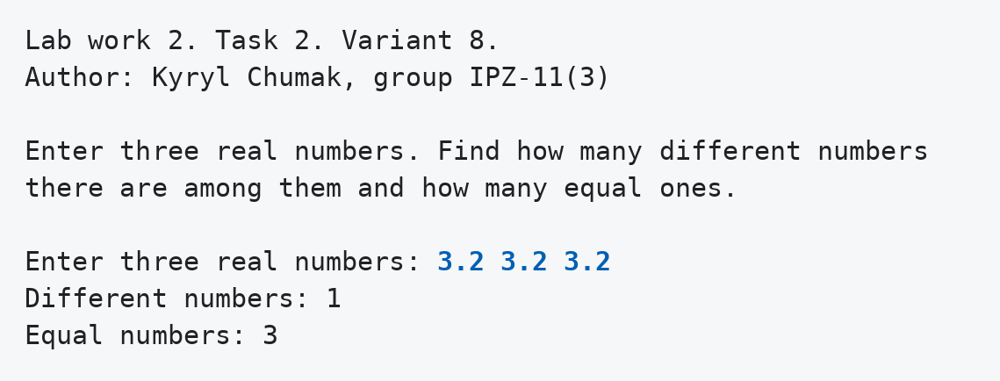
Аналіз достовірності результатів
Я порахував тести вручну, щоб пройти всі гілки обох програм, і порівняв результат із виводом.
Завдання 1, варіант 4
Таблиця 2 - Ручні тести функції f(x)
| x | Гілка | Розрахунок | Очікується | Програма |
|---|---|---|---|---|
| 9 | x > 5 | 5 · √9 = 5 · 3 | 15 | 15 |
| 5 | немає | жодна умова не виконується | повідомлення | The function is not defined for x = 5 |
| 2 | 1 < x < 5 | 1 / 2 | 0.5 | 0.5 |
| 1 | -5 ≤ x ≤ 1 | 1 · 1 | 1 | 1 |
| -5 | -5 ≤ x ≤ 1 | (-5) · (-5) | 25 | 25 |
| -6 | x < -5 | 10 · (-6) | -60 | -60 |
У точці x = 1 формула 1 / x дала б те саме значення, тому цей тест не відрізняє сусідні гілки. На межі -5 різницю видно: формула 10x дала б -50, а програма вивела 25.
Завдання 2, варіант 8
Таблиця 3 - Ручні тести для трьох чисел
| Числа | Випадок | Очікується: різних, однакових | Програма |
|---|---|---|---|
| 1.5, 2.5, -3 | усі різні | 3, 0 | 3, 0 |
| 2, 2, 5 | рівні перше і друге | 2, 2 | 2, 2 |
| 7.5, 1, 7.5 | рівні перше і третє | 2, 2 | 2, 2 |
| -4, 0, 0 | рівні друге і третє | 2, 2 | 2, 2 |
| 3.2, 3.2, 3.2 | усі рівні | 1, 3 | 1, 3 |
Некоректні рядки abc і 1 abc 3 програми відхилили і попросили ввести дані
ще раз.
Висновки
В умові першого завдання є пропуск: при x = 5 не підходить жодна гілка. Тому в програмі з'явилась логічна змінна, і для цього x виводиться повідомлення. У другому завданні довелося самому вирішити, що вважати кількістю однакових чисел, а потім розібрати три випадки. Ручні тести пройшли всі гілки й межі 1, 5 і -5, програма дала ті самі значення.